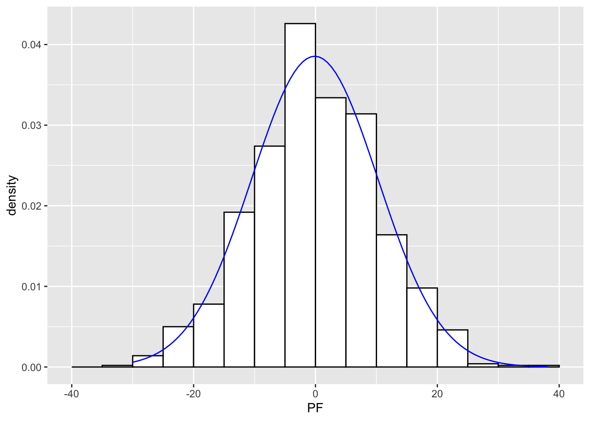

Chapter 9 Simulating data
I’ve just begun to explore R, and I realize that many of my questions could be improved with example data. Generating this kind of data takes practice, though.
Some good websites: https://clayford.github.io/dwir/dwr_12_generating_data.html
https://cran.r-project.org/web/packages/simstudy/vignettes/simstudy.html
https://aosmith.rbind.io/2018/08/29/getting-started-simulating-data/
Also, remember that R packages have a lot of great data.
For a quick and well-written overview of the for loop, see https://www.r-bloggers.com/2021/09/r-for-loop/.
data()9.1 Sample()
Starting with Clayford’s nice (and long page):
sample(5) #sample without replacement## [1] 2 5 4 3 1# or generate a random permutation of a vector:
dat <- c(10, 12, 18, 16, 18, 9)
sample(dat)## [1] 10 18 9 16 18 12# bootstrap resampling: sampling the same number of items
# WITH replacement. The bootstrap method is a resampling
# technique used to estimate statistics on a population by
# sampling a dataset with replacement.
sample(dat, replace = TRUE)## [1] 18 18 12 12 9 10rm(dat)
sample(state.abb, size = 10)## [1] "UT" "IA" "NC" "MD" "OH" "CO" "GA" "TN" "PA" "WA"# Using 1:6 and size=1, we can simulate the roll of a die:
sample(1:6, size = 1)## [1] 4# We can simulate the roll of a die 100 times by setting
# size=100 and replace=TRUE
sample(1:6, size = 100, replace = TRUE)## [1] 4 2 4 1 6 1 4 1 6 2 3 2 6 6 2 5 2 6 6 6 1 3 3 6 4 6 3 1 4 5 1 1 6 4 5 5 4
## [38] 6 5 4 4 1 5 5 6 1 1 3 6 2 2 3 6 2 4 3 5 2 2 1 3 3 2 2 5 2 5 4 5 4 6 1 3 2
## [75] 3 3 1 5 6 6 6 4 4 1 5 5 6 1 3 6 3 6 3 3 4 1 1 4 2 6# sample produces a vector, so we can manipulate it as we
# would any other vector. For example, simulate a 100 die
# rolls and tally up the totals using table() and
# prop.table():
table(sample(1:6, size = 100, replace = TRUE))##
## 1 2 3 4 5 6
## 20 17 14 17 17 15prop.table(table(sample(1:6, size = 100, replace = TRUE)))##
## 1 2 3 4 5 6
## 0.20 0.17 0.13 0.20 0.19 0.11table(sample(state.abb, size = 1000, replace = TRUE))##
## AK AL AR AZ CA CO CT DE FL GA HI IA ID IL IN KS KY LA MA MD ME MI MN MO MS MT
## 22 23 19 18 30 20 18 19 26 24 23 14 19 30 18 18 15 11 26 23 21 22 27 27 18 20
## NC ND NE NH NJ NM NV NY OH OK OR PA RI SC SD TN TX UT VA VT WA WI WV WY
## 20 17 18 23 17 20 18 17 17 22 18 14 19 21 17 20 10 24 21 16 20 19 28 13prop.table(table(sample(state.abb, size = 1000, replace = TRUE)))##
## AK AL AR AZ CA CO CT DE FL GA HI IA ID
## 0.025 0.010 0.023 0.024 0.021 0.018 0.023 0.013 0.019 0.014 0.024 0.019 0.022
## IL IN KS KY LA MA MD ME MI MN MO MS MT
## 0.021 0.018 0.022 0.018 0.020 0.023 0.019 0.020 0.019 0.015 0.015 0.028 0.023
## NC ND NE NH NJ NM NV NY OH OK OR PA RI
## 0.015 0.023 0.015 0.014 0.017 0.019 0.023 0.025 0.020 0.011 0.016 0.019 0.023
## SC SD TN TX UT VA VT WA WI WV WY
## 0.024 0.032 0.025 0.020 0.015 0.019 0.026 0.024 0.016 0.016 0.027# using the forward-pipe operator: %>%
library(magrittr)##
## Attaching package: 'magrittr'## The following object is masked from 'package:purrr':
##
## set_names## The following object is masked from 'package:tidyr':
##
## extractsample(1:6, size = 100, replace = TRUE) %>%
table() %>%
prop.table()## .
## 1 2 3 4 5 6
## 0.20 0.17 0.13 0.19 0.15 0.16# Or simulate rolling two dice and summing the total:
sum(sample(1:6, size = 2, replace = TRUE))## [1] 6# same thing with %>%
sample(6, size = 2, replace = TRUE) %>%
sum()## [1] 11# simulate rolling two dice 100 times by updating the
# sample 'space'
sample(2:12, size = 100, replace = TRUE)## [1] 10 7 12 7 9 5 9 11 9 7 12 10 3 2 12 4 5 10 12 11 10 12 10 8 10
## [26] 5 11 8 12 12 4 5 5 9 11 9 11 10 2 7 9 8 11 7 8 12 5 6 11 3
## [51] 9 5 7 10 11 5 8 11 4 6 4 6 4 5 7 12 9 10 2 11 6 11 9 5 4
## [76] 12 10 6 11 5 11 8 10 10 10 11 7 11 5 4 9 10 11 6 9 3 11 12 3 11# proportion of 'snake-eyes' in 1000 rolls
mean(sample(2:12, size = 1000, replace = TRUE) == 2)## [1] 0.0899.2 replicate()
We can use the replicate() function to replicate samples. The replicate() function allows you to replicate an expression as many times as you specify. The basix syntax is replicate(n, expr) where n is the number of replications and expr is the expression you want to replicate.
# Roll 2 dice and keep the largest number, 10,000 times:
rolls <- replicate(n = 1e+05, expr = max(sample(1:6, size = 2,
replace = TRUE)))
# calculate proportions:
prop.table(table(rolls))## rolls
## 1 2 3 4 5 6
## 0.02840 0.08260 0.13818 0.19460 0.24991 0.30631barplot(table(rolls))rm(rolls)9.3 sample() revisited
The sample function also has a prob argument that allows you to assign probabilities to your items. For example to simulate the flip of a loaded coin, with Tails having probability 0.65:
flips <- sample(c("H", "T"), 1000, replace = TRUE, prob = c(0.35,
0.65))
prop.table(table(flips))## flips
## H T
## 0.337 0.663rm(flips)Coins are nice, but we can also use sample to generate practical data, for example males and females. A web site says UVa has 11,632 female students and 10,353 male students as of Fall 2015.
uva <- c(11632, 10353) # female, male
round(uva/sum(uva), 2)## [1] 0.53 0.47Note how elegantly this answers a basic question. Nice!
We can generate a fake random sample of 500 UVa students with a weighted sampling scheme like so:
students <- sample(c("female", "male"), 500, replace = TRUE,
prob = c(0.53, 0.47))
prop.table(table(students))## students
## female male
## 0.54 0.46rm(students, uva)When used with subsetting brackets, sample() can be used to create training and test sets. For example, say we want to build some sort of predictive model using our training data. We may want to use half our data to build the model and then use the other half to evaluate its performance.
train <- sample(nrow(iris), size = nrow(iris)/2)
# train is a random sample of numbers from 1 - 365. We can
# treat these like row numbers.
irisTrain <- iris[train, ]
irisTest <- iris[-train, ]
# confirm no intersection
dplyr::intersect(irisTrain, irisTest)## [1] Sepal.Length Sepal.Width Petal.Length Petal.Width Species
## <0 rows> (or 0-length row.names)rm(train, irisTest, irisTrain)9.4 generating fixed levels ————————————————-
Often generating data means creating a series of fixed levels, such as 10 males and 10 females. The rep() function can be useful for this. Below we replicate 10 each of “M” and “F”:
rep(c("M", "F"), each = 10)## [1] "M" "M" "M" "M" "M" "M" "M" "M" "M" "M" "F" "F" "F" "F" "F" "F" "F" "F" "F"
## [20] "F"rep(c("M", "F"), times = 10)## [1] "M" "F" "M" "F" "M" "F" "M" "F" "M" "F" "M" "F" "M" "F" "M" "F" "M" "F" "M"
## [20] "F"rep(c("M", "F"), length.out = 15)## [1] "M" "F" "M" "F" "M" "F" "M" "F" "M" "F" "M" "F" "M" "F" "M"# or just length, for short
rep(c("M", "F"), length = 15)## [1] "M" "F" "M" "F" "M" "F" "M" "F" "M" "F" "M" "F" "M" "F" "M"# Notice that all these generated a character vector. To
# use as a 'factor', we would need to wrap it in the
# factor() function.
factor(rep(c("M", "F"), each = 10))## [1] M M M M M M M M M M F F F F F F F F F F
## Levels: F M# A function specifically for creating factors is the gl()
# function. gl = 'generate levels'. Below we generate a
# factor with 2 levels of 10 each and labels of 'M' and
# 'F'. Notice the result is a factor.
gl(n = 2, k = 10, labels = c("M", "F"))## [1] M M M M M M M M M M F F F F F F F F F F
## Levels: M F# A more common occurence is combinations of fixed levels,
# say gender, education, and status. A function that helps
# create every combination of levels is expand.grid().
# Below we generate every combination of the levels
# provided for gender, education, and status. Notice the
# first factors vary fastest.
expand.grid(gender = c("M", "F"), education = c("HS", "College",
"Advanced"), status = c("Single", "Married", "Divorced",
"Widowed"))## gender education status
## 1 M HS Single
## 2 F HS Single
## 3 M College Single
## 4 F College Single
## 5 M Advanced Single
## 6 F Advanced Single
## 7 M HS Married
## 8 F HS Married
## 9 M College Married
## 10 F College Married
## 11 M Advanced Married
## 12 F Advanced Married
## 13 M HS Divorced
## 14 F HS Divorced
## 15 M College Divorced
## 16 F College Divorced
## 17 M Advanced Divorced
## 18 F Advanced Divorced
## 19 M HS Widowed
## 20 F HS Widowed
## 21 M College Widowed
## 22 F College Widowed
## 23 M Advanced Widowed
## 24 F Advanced Widowed# Notice that creates a data frame that we can save:
DF <- expand.grid(gender = c("M", "F"), education = c("HS", "College",
"Advanced"), status = c("Single", "Married", "Divorced",
"Widowed"))
class(DF)## [1] "data.frame"rm(DF)Or imagine an experiment where 3 people throw 3 different kinds of paper airplanes, made of 3 paper types (3x3 = 9 planes), throwing each plane 8 times.
schedule <- expand.grid(thrower = c("Clay", "Rod", "Kevin"),
paper = c("18", "20", "24"), design = c("a", "b", "c"), rep = 1:8)
# Randomize and drop the rep column. The
# sample(nrow(schedule)) code scrambles the numbers 1
# through 216, which I then use to randomly shuffle the
# schedule of throws.
k <- sample(nrow(schedule))
schedule <- schedule[k, 1:3]
head(schedule, n = 10)## thrower paper design
## 21 Kevin 18 c
## 88 Clay 24 a
## 173 Rod 18 b
## 162 Kevin 24 c
## 98 Rod 24 b
## 216 Kevin 24 c
## 215 Rod 24 c
## 175 Clay 20 b
## 46 Clay 18 c
## 123 Kevin 20 b# output to csv file for logging 'distance flown' data
write.csv(schedule, file = "throwLog.csv", row.names = FALSE)
rm(k, schedule)This is a great way to set up an experiment, but I’d like to also add data for the throw, based on interesting distributions (normal, etc.). How would I generate samples for each contestant that was based on slightly different distributions?
What sort of distribution? See this page to get a quick refresher on common distributions: https://www.analyticsvidhya.com/blog/2017/09/6-probability-distributions-data-science/.
Note also that ?distributions gives you the distributions in {stats}. Persevere for a time.
9.5 generating numerical sequences
# The seq() function allows you to generate sequences of
# numbers:
seq(from = 0, to = 10, by = 2)## [1] 0 2 4 6 8 10seq(0, 10, 0.2)## [1] 0.0 0.2 0.4 0.6 0.8 1.0 1.2 1.4 1.6 1.8 2.0 2.2 2.4 2.6 2.8
## [16] 3.0 3.2 3.4 3.6 3.8 4.0 4.2 4.4 4.6 4.8 5.0 5.2 5.4 5.6 5.8
## [31] 6.0 6.2 6.4 6.6 6.8 7.0 7.2 7.4 7.6 7.8 8.0 8.2 8.4 8.6 8.8
## [46] 9.0 9.2 9.4 9.6 9.8 10.0# Go backwards
seq(1000, 0, -100)## [1] 1000 900 800 700 600 500 400 300 200 100 0# The seq() function has a length.out argument that allows
# you to specify the size of the vector you want to create.
# It automatically calculates the increment. We usually
# just abbreviate to length
seq(1, 10, length = 30)## [1] 1.000000 1.310345 1.620690 1.931034 2.241379 2.551724 2.862069
## [8] 3.172414 3.482759 3.793103 4.103448 4.413793 4.724138 5.034483
## [15] 5.344828 5.655172 5.965517 6.275862 6.586207 6.896552 7.206897
## [22] 7.517241 7.827586 8.137931 8.448276 8.758621 9.068966 9.379310
## [29] 9.689655 10.000000# The colon operator(:) also allows you to generate regular
# sequences in steps of 1.
1:10## [1] 1 2 3 4 5 6 7 8 9 1010:-10 # reverse direction## [1] 10 9 8 7 6 5 4 3 2 1 0 -1 -2 -3 -4 -5 -6 -7 -8
## [20] -9 -10# When used with factors, the colon operator generates an
# interaction factor:
f1 <- gl(n = 2, k = 3)
f1## [1] 1 1 1 2 2 2
## Levels: 1 2f2 <- gl(n = 3, k = 2, labels = c("a", "b", "c"))
f2## [1] a a b b c c
## Levels: a b cf1:f2## [1] 1:a 1:a 1:b 2:b 2:c 2:c
## Levels: 1:a 1:b 1:c 2:a 2:b 2:crm(f1, f2)The last step seems akin to perfectly shuffling two decks of cards (the decks must be of equal length).
9.6 seq_along() and seq_len().
seq_along() returns the indices of a vector while seq_len(n) returns an integer vector of 1:n.
seq_along(100:120)## [1] 1 2 3 4 5 6 7 8 9 10 11 12 13 14 15 16 17 18 19 20 21seq_along(state.abb)## [1] 1 2 3 4 5 6 7 8 9 10 11 12 13 14 15 16 17 18 19 20 21 22 23 24 25
## [26] 26 27 28 29 30 31 32 33 34 35 36 37 38 39 40 41 42 43 44 45 46 47 48 49 50seq_len(12)## [1] 1 2 3 4 5 6 7 8 9 10 11 129.7 generating random data from a probability distribution
A central idea in inferential statistics is that the distribution of data can often be approximated by a theoretical distribution. R provides functions for working with several well-known theoretical distributions, including the ability to generate data from those distributions. A common one is the rnorm() function which generates data from a Normal distribution.
In R, the functions for theoretical distributions take the form of dxxx, pxxx, qxxx and rxxx.
- dxxx is for the probability density/mass function (dnorm)
- pxxx is for the cumulative distribution function (pnorm)
- qxxx is for the quantile function (qnorm)
- rxxx is for random variate generation (rnorm)
For random variate generation we’re interested in the rxxx variety.
9.8 Normal distribution:
# 10 random draws from N(100,5)
rnorm(n = 10, mean = 100, sd = 5)## [1] 98.66742 101.16132 102.19461 86.84940 101.51612 99.95910 99.20285
## [8] 92.69651 100.47816 97.257969.9 Binomial distribution:
# 10 random draws from b(1,0.5) AKA, 10 coin flips (size is
# the number of trials)
rbinom(n = 10, size = 1, prob = 0.5)## [1] 1 1 0 1 1 1 0 1 1 0# 10 random draws from b(1,0.8) AKA, 10 coin flips with a
# coin loaded Heads (or Tails) 80% of time
rbinom(n = 10, size = 1, prob = 0.8)## [1] 0 1 1 0 1 0 1 1 1 0# 10 random draws from b(10,0.5) AKA, 10 results of 10 coin
# flips
rbinom(n = 10, size = 10, prob = 0.5)## [1] 5 3 4 5 8 5 5 3 5 7# We can use a binomial distribution to simulate dichotmous
# answers such as Yes/No or success/fail. Simulate a vector
# of responses where respondents are 65% likely to say Yes
# (1) versus No (0)
rbinom(n = 10, size = 1, prob = 0.65)## [1] 0 1 1 1 1 1 1 1 1 0# could also just use sample
sample(c("Y", "N"), size = 10, replace = TRUE, prob = c(0.65,
0.35))## [1] "Y" "Y" "N" "Y" "Y" "Y" "Y" "Y" "Y" "Y"9.10 Uniform distribution
# 10 random draws from a uniform distribution u(0,100)
runif(10, 0, 100)## [1] 81.88379 12.41300 37.03454 68.18687 58.59851 29.09355 38.68486 70.76103
## [9] 57.85143 26.29435# A uniform distribution can be good for random sampling.
# Let's say we want to sample about 10% of iris data:
k <- runif(nrow(iris), 0, 1) # [0,1] interval is default
sbSamp <- iris[k < 0.1, ] # sample about 10% of rows
dim(sbSamp)## [1] 19 5# dplyr does this as well without the need for runif; and
# it's precise in its sampling fraction.
sbSamp <- dplyr::sample_frac(iris, 0.1) # sample exactly 10% of rows
dim(sbSamp)## [1] 15 5rm(sbSamp, k)9.11 Sampling from multiple distributions (building in a “difference”)
The arguments to rxxx functions can take vectors! This means we can use one function call to generate draws from multiple distributions.
# alternating random values from N(10,4) and N(100,40)
rnorm(10, mean = c(2, 100), sd = c(2, 40))## [1] 5.328161 66.468495 1.823437 119.813332 -1.211117 110.227283
## [7] 3.420011 89.456878 -1.939389 102.805432# 30 random draws, 10 each from N(10,4), N(90,4) and
# N(400,4)
rnorm(30, mean = rep(c(10, 90, 400), each = 10), sd = 4)## [1] 11.848625 7.062857 10.235013 15.881340 12.131422 11.880648
## [7] 8.966321 19.317164 5.844385 10.035814 94.940950 89.576164
## [13] 90.230197 85.438534 93.371686 88.581047 91.377628 96.031555
## [19] 91.066694 90.106946 403.013600 404.661590 401.158407 395.135567
## [25] 395.681059 399.562900 403.008095 398.163003 399.153346 401.710149# 100 random draws, 50 each from b(5,0.5) and b(50,0.5)
rbinom(n = 100, size = rep(c(5, 50), each = 50), prob = 0.5)## [1] 2 1 1 3 2 3 3 2 4 3 3 1 1 2 3 3 1 3 5 3 2 2 1 4 1
## [26] 2 4 2 2 2 1 1 2 1 2 3 2 2 2 1 3 5 3 1 2 3 2 1 3 3
## [51] 22 28 24 25 17 29 24 29 24 21 27 17 18 25 27 28 24 21 21 19 24 24 30 26 25
## [76] 25 24 26 19 21 25 30 21 24 23 28 29 26 24 21 20 25 30 24 25 27 28 28 25 25# Combined with matrix(), one can generate 'multiple'
# random samples from a distribution. For example, draw 5
# random samples of size 10 from a N(10,1):
matrix(rnorm(10 * 5, 10, 1), ncol = 5)## [,1] [,2] [,3] [,4] [,5]
## [1,] 9.036184 8.228816 8.428310 10.091784 10.065903
## [2,] 11.913161 10.620178 9.533036 9.962295 10.750959
## [3,] 10.225506 9.167468 10.672955 9.281624 8.699020
## [4,] 8.944468 9.821513 9.451991 9.983957 9.879833
## [5,] 10.245307 10.086259 7.673951 8.919391 7.219819
## [6,] 9.172797 9.202411 9.046613 10.015565 11.270271
## [7,] 10.881257 9.188296 7.803665 10.467794 11.208078
## [8,] 9.592817 10.217848 10.368692 10.538772 10.116299
## [9,] 9.986472 10.271840 10.405884 9.796671 9.990211
## [10,] 10.512477 9.200774 9.942726 10.109449 12.321032Note that in the last example, we technically drew one sample of size 50 and then laid it out in a 10x5 matrix.
9.12 The good stuff: building in a difference based on a categorical variable
Using ifelse() we can generate different data based on a TRUE/FALSE condition. Let’s say we have treated and untreated subjects. I’d like to generate Normal data that differs based on the treatment.
trtmt <- sample(c("Treated", "Untreated"), size = 20, replace = TRUE)
ifelse(trtmt == "Treated", yes = rnorm(20, 10, 1), no = rnorm(20,
20, 1))## [1] 20.723912 9.103286 20.321116 9.547927 11.594527 9.951724 20.725621
## [8] 19.123367 10.712649 10.387431 11.443424 10.326516 20.600475 19.225502
## [15] 12.802787 20.061200 18.900170 9.107065 10.968940 19.913210Notice we have to make the length of the yes/no arguments the SAME LENGTH as the trtmt==“Treated” logical vector! What happens if we use rnorm(n=1,…)?
# What about more than two groups?
n <- 200
trtmt <- sample(LETTERS[1:6], size = n, replace = TRUE)
# Say we want to generate differnt Normal data for each
# group. One way is to do a for-loop with multiple if
# statements:
val <- numeric(n) # empty vector
for (i in seq_along(trtmt)) {
if (trtmt[i] == "A")
val[i] <- rnorm(1, 10, 2) else if (trtmt[i] == "B")
val[i] <- rnorm(1, 20, 4) else if (trtmt[i] == "C")
val[i] <- rnorm(1, 30, 6) else if (trtmt[i] == "D")
val[i] <- rnorm(1, 40, 8) else if (trtmt[i] == "E")
val[i] <- rnorm(1, 50, 10) else val[i] <- rnorm(1, 60, 12)
}
val## [1] 46.428174 44.149738 57.184741 9.444044 21.952955 40.899507 18.971545
## [8] 67.328571 8.829315 23.373316 40.745680 35.435106 22.076307 43.229001
## [15] 9.933163 63.906776 11.864437 37.008983 36.467848 30.492950 8.892441
## [22] 25.672618 31.616476 10.657223 8.788681 34.070005 28.740924 10.902777
## [29] 12.561193 40.689616 48.250545 40.021587 75.263679 24.693692 19.667534
## [36] 9.904587 15.224703 57.870358 24.683829 39.118094 40.870632 8.263384
## [43] 48.458739 28.779333 34.003611 12.509631 22.316084 46.162946 25.784933
## [50] 22.618044 30.772797 43.094284 48.876835 17.692924 20.991486 7.169333
## [57] 24.267032 24.119535 25.705284 22.971583 24.535180 26.107435 51.398646
## [64] 43.035241 52.284173 17.363235 30.782361 63.252764 30.796179 43.137001
## [71] 54.610548 45.011287 36.655019 52.862881 41.153461 42.421820 26.524985
## [78] 34.965579 12.135669 45.094289 51.411124 45.331861 33.654875 34.265608
## [85] 8.905355 10.811275 66.883548 31.759255 67.279860 19.700615 46.482875
## [92] 62.759488 17.019218 14.568455 49.128917 24.946838 9.148043 68.921827
## [99] 10.273990 72.894250 38.748923 19.193598 9.934198 53.964612 23.631532
## [106] 34.327352 41.509801 7.875897 77.793672 8.115391 60.009636 58.913676
## [113] 17.612787 40.103619 50.379651 10.133235 18.808507 25.141638 23.825021
## [120] 33.311633 60.245335 38.960925 62.230869 8.032158 61.796108 12.053449
## [127] 61.890543 9.581448 40.886643 17.785047 43.934795 51.361943 41.651089
## [134] 50.673786 32.345359 60.682757 32.732852 20.205942 10.714730 33.482836
## [141] 13.743926 62.813966 21.270051 67.357492 11.149672 32.115698 41.641582
## [148] 41.262360 19.833400 32.546026 12.723434 33.186941 15.858358 25.123512
## [155] 12.186821 35.192922 39.477760 52.813907 76.205267 58.630979 41.665793
## [162] 34.020803 52.238890 14.895215 21.571451 49.759234 34.510709 11.315521
## [169] 6.851515 29.957946 24.752574 31.406862 9.867611 10.730757 10.398206
## [176] 52.019241 7.746008 71.048458 22.342669 43.450229 30.747764 30.276315
## [183] 9.931689 11.477259 33.096321 25.101114 9.361784 35.146203 41.400045
## [190] 56.273348 61.415905 10.008457 9.709782 34.436554 52.076178 10.826817
## [197] 76.394982 30.280178 52.615341 56.993582A more R-like way would be to take advantage of vectorized functions. First create a data frame with one row for each group and the mean and standard deviations we want to use to generate the data for that group.
dat <- data.frame(g = LETTERS[1:6], mean = seq(10, 60, 10), sd = seq(2,
12, 2))
dat## g mean sd
## 1 A 10 2
## 2 B 20 4
## 3 C 30 6
## 4 D 40 8
## 5 E 50 10
## 6 F 60 12dat is currently a petite little dataframe of 6 rows.
Now sample the row numbers (1 - 6) WITH replacement. We can use these to randomly sample the data frame rows.
ASIDE: Recall that we can repeatedly call a row or element using subsetting brackets. For example, call the first row of iris 5 times:
iris[c(1, 1, 1, 1, 1), ]## Sepal.Length Sepal.Width Petal.Length Petal.Width Species
## 1 5.1 3.5 1.4 0.2 setosa
## 1.1 5.1 3.5 1.4 0.2 setosa
## 1.2 5.1 3.5 1.4 0.2 setosa
## 1.3 5.1 3.5 1.4 0.2 setosa
## 1.4 5.1 3.5 1.4 0.2 setosaLet’s exploit that to randomly sample with replacement our data frame of groups:
n <- 200
k <- sample(1:6, n, replace = TRUE)
dat <- dat[k, ]
str(dat)## 'data.frame': 200 obs. of 3 variables:
## $ g : chr "E" "E" "E" "F" ...
## $ mean: num 50 50 50 60 30 50 60 60 10 30 ...
## $ sd : num 10 10 10 12 6 10 12 12 2 6 ...# Now generate our data for each group using ONE call to
# rnorm.
dat$vals <- rnorm(n, mean = dat$mean, sd = dat$sd)
head(dat)## g mean sd vals
## 5 E 50 10 63.35170
## 5.1 E 50 10 49.93744
## 5.2 E 50 10 50.23682
## 6 F 60 12 32.64805
## 3 C 30 6 36.57889
## 5.3 E 50 10 51.80706This is pretty neat. We go from one little dataframe to a larger one in a few lines of code. Mean and SD can be varied by the class, “g” in this case.
9.13 A demonstration of the Central Limit Theorem
The Central Limit Theorem states that the sum of a large number of independent random variables will be approximately normally distributed almost regardless of their individual distributions. We can demonstrate this using various rxxx functions.
# sum 6 values from 6 different distributions (sample size
# = 6)
n <- 10000 # simulate 1000 times
clt <- rexp(n, rate = 1) + rbinom(n, 10, 0.4) + rchisq(n, df = 6) +
rnorm(n, 12, 12) + rpois(n, lambda = 3) + rt(n, df = 7)
hist(clt, freq = FALSE)
# overlay a normal density curve
X <- seq(min(clt), max(clt), length = 500) # x
Y <- dnorm(X, mean = mean(clt), sd = sd(clt)) # f(x) = dnorm
lines(X, Y, type = "l", col = "blue") # plot (x,y) coordinates as a 'blue' line ('l')
rm(X, Y, clt)Let’s unpack some of this:
clt1 <- rexp(n, rate = 1)
hist(clt1, freq = FALSE)clt2 <- rbinom(n, 10, 0.4)
hist(clt2, freq = FALSE)clt3 <- rchisq(n, df = 6)
hist(clt3, freq = FALSE)clt4 <- rnorm(n, 12, 12)
hist(clt4, freq = FALSE)clt5 <- rpois(n, lambda = 3)
hist(clt5, freq = FALSE)clt6 <- rt(n, df = 7)
hist(clt6, freq = FALSE)# All of this base R graphing is clunky and doesn't lend
# itself to modification as well as ggplot() figures.
library(tidyverse)
df <- data.frame(clt1, clt2, clt3, clt4, clt5, clt6)
df %>%
ggplot(aes(clt3)) + geom_histogram(bins = 30)df %>%
ggplot(aes(clt3)) + geom_density()9.14 Overlaying normal curve on histogram
The following solution was on StackOverflow at https://stackoverflow.com/questions/6967664/ggplot2-histogram-with-normal-curve
set.seed(1)
df1 <- data.frame(PF = 10 * rnorm(1000))
ggplot(df1, aes(x = PF)) + geom_histogram(aes(y = ..density..),
breaks = seq(-40, 40, by = 5), colour = "black", fill = "white") +
stat_function(fun = dnorm, args = list(mean = mean(df1$PF),
sd = sd(df1$PF)), color = "blue")
From the {ggplot2} help: “This stat makes it easy to superimpose a function on top of an existing plot. The function is called with a grid of evenly spaced values along the x axis, and the results are drawn (by default) with a line.”
Note how stat_function() lends itself to quick addition: simply feed the correct fun and args to the function.
Now accomplish this for clt3
ggplot(df, aes(x = clt3)) + geom_histogram(aes(y = ..density..),
breaks = seq(0, 30, by = 1), colour = "black", fill = "white") +
stat_function(fun = dchisq, args = list(df = 6), color = "blue") +
labs(title = "chi-squared distribution")Note how the args in dchisq includes only the df = 6. No mean needs to be calculated (as in dnorm).
Now accomplish this for clt1
ggplot(df, aes(x = clt1)) + geom_histogram(aes(y = ..density..),
breaks = seq(0, 8, by = 0.5), colour = "black", fill = "white") +
stat_function(fun = dexp, args = list(rate = 1), color = "blue") +
labs(title = "exponential distribution")9.15 Crossing trial
From David Robinson birthday paradox Rblogger at https://www.r-bloggers.com/the-birthday-paradox-puzzle-tidy-simulation-in-r/
summarized <- crossing(people = seq(2, 50, 2), trial = 1:100) %>%
mutate(birthday = map(people, ~sample(365, .x, replace = TRUE)),
multiple = map_lgl(birthday, ~any(duplicated(.x)))) %>%
group_by(people) %>%
summarize(chance = mean(multiple))
ggplot(summarized, aes(people, chance)) + geom_line() + scale_y_continuous(labels = scales::percent_format()) +
labs(y = "Probability two have the same birthday")
# Checking the work with pbirthday function
summarized %>%
mutate(exact = map_dbl(people, pbirthday)) %>%
ggplot(aes(people, chance)) + geom_line() + geom_line(aes(y = exact),
lty = 2, color = "blue") + scale_y_continuous(labels = scales::percent_format()) +
labs(y = "Probability two have the same birthday")